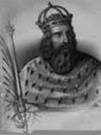
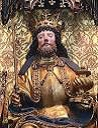
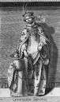

96154661 Inger Eriksdotter * omkring 1100 Falster, Själland, Danmark † 1157 Fjenneslev, Sörö, Danmark Prinsessa Blev ca 57 år

192309322 Jarl Erik af Västergötland o Falster * omkring 1080 Västergötland, Sverige † efter 1131 Haraldsted, Ringsted, Själland, Danmark
192309323 Prinsessan Cecilie Knutsdatter af Danmark * omkring 1086 Danmark † omkring 1131 Haraldsted, Ringsted, Själland, Danmark Prinsessa Blev ca 45 år

384618646 Kung Knut den Helige (den IV) Svendsen * mellan 1040 och 1043 Roskilde, Danmark † 1086-07-10 Odense, Danmark Kung av Danmark Blev högst 46 år

384618647 Drottning Adele av Flandern * efter 1064 Comte' de Flandre, Frankrike † 1115-04 Duchi di Puglia et Calabria, Italien